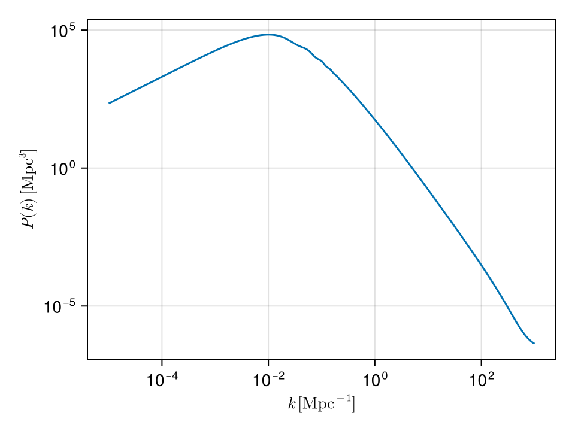
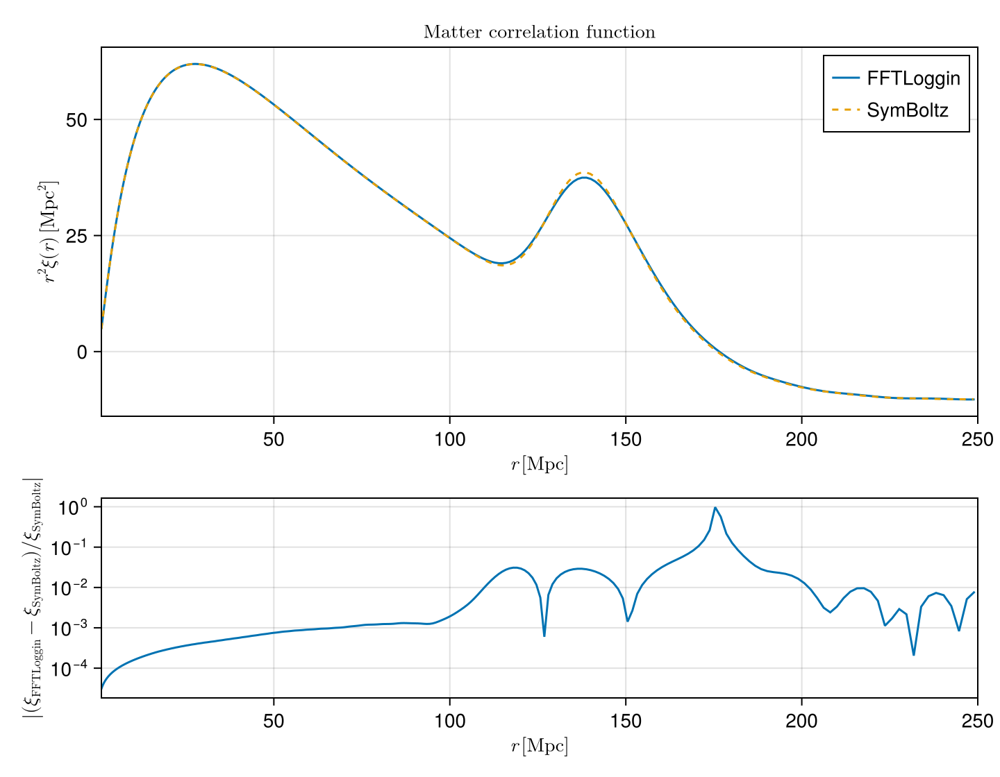

Matter correlation function from P(k)
This example uses SymBoltz.jl to compute the linear matter power spectrum $P(k)$ for a ΛCDM cosmology, then turns it into the two-point correlation function $\xi(r)$ two different ways:
With FFTLoggin, using the identity
\[\xi(r) \;=\; \frac{1}{(2\pi r)^{3/2}} \, \mathrm{IFHT}\!\left[k^{3/2} P(k); \, \mu = \tfrac{1}{2}\right](r),\]
which follows from $j_0(x) = \sqrt{\pi/(2x)}\,J_{1/2}(x)$ applied to the usual
\[\xi(r) \;=\; \frac{1}{2\pi^2}\int_0^\infty k^2 \, P(k) \, j_0(kr) \, \mathrm{d}k.\]
With SymBoltz' built-in
correlation_function, which internally uses the FFTLog implementation inTwoFAST.jl.
1. Solve ΛCDM with SymBoltz
using SymBoltz, Unitful, UnitfulAstro
using FFTLoggin
using DataInterpolations
using CairoMakie
using LaTeXStrings
CairoMakie.activate!(type = "png")
M = ΛCDM()
pars = parameters_Planck18(M)
prob = CosmologyProblem(M, pars)
ks_solve = 10 .^ range(-5, +3, length = 300) ./ u"Mpc"
sol = solve(prob, ks_solve; thread = false)┌ Warning: Runtime invalidation was disabled, but the CPU info is out-of-date.
│ Will continue with incorrect CPU name (from build time).
└ @ HostCPUFeatures ~/.julia/packages/HostCPUFeatures/ZTXz4/src/cpu_info.jl:71The wide $k$ range matches the SymBoltz correlation_function example so that the spline $P(k)$ is well-resolved across the band needed by FFTLog.
2. Build the FFTLog $k$-grid and evaluate $P(k)$
We use $N = 2048$ log-spaced points, matching SymBoltz' default for correlation_function. The spectrum_matter(sol, ks) overload interpolates between the wavenumbers stored in sol, so this just resamples the spline.
const N = 2048
ks_unitful = 10 .^ range(-5, 3, length = N) ./ u"Mpc"
ks = ustrip.(u"Mpc^-1", ks_unitful)
Ps = ustrip.(u"Mpc^3", spectrum_matter(sol, ks_unitful))
fig_pk = Figure(size = (480, 360))
ax_pk = Axis(
fig_pk[1, 1];
xlabel = L"k\,[\mathrm{Mpc}^{-1}]",
ylabel = L"P(k)\,[\mathrm{Mpc}^3]",
xscale = log10,
yscale = log10,
)
lines!(ax_pk, ks, Ps)
fig_pk
3. $\xi(r)$ via FFTLoggin
FFTLog(kernel, x) treats x as the input (sample) axis. We feed our $k$-array in that role; the conjugate axis returned by loggrid then plays the role of the real-space $r$ grid. forward is the Hankel transform with kernel $J_{1/2}$, which is the mathematical inverse Hankel transform that the formula needs.
# lowring = true snaps kr to a value that reduces ringing in the transform
f = FFTLog(BesselJKernel(0.5), ks; kr = 1.0, lowring = true)
grid = loggrid(f; r = collect(ks))
rs_ff = grid.k
input = @. ks^(3 / 2) * Ps
ifht = forward(f, input)
xi_ff = @. ifht / (2π * rs_ff)^(3 / 2)4. $\xi(r)$ via SymBoltz
rs_sb_raw, xi_sb = correlation_function(sol)
h = sol.bg.ps[:h]
rs_sb = ustrip.(u"Mpc", rs_sb_raw ./ (SymBoltz.k0 * h) .* u"Mpc")The unit conversion of rs_sb_raw follows the snippet in the SymBoltz docs.
5. Compare
We compare on the BAO-relevant interval $r \in [1, 250]\,\mathrm{Mpc}$. The SymBoltz curve is interpolated onto the FFTLoggin $r$-grid for the residual panel.
perm = sortperm(rs_sb)
rs_sb_s, xi_sb_s = rs_sb[perm], xi_sb[perm]
itp = DataInterpolations.LinearInterpolation(xi_sb_s, rs_sb_s)
rmin, rmax = 1.0, 250.0
mask_ff = (rs_ff .>= max(rmin, minimum(rs_sb_s))) .&
(rs_ff .<= min(rmax, maximum(rs_sb_s)))
mask_sb = (rs_sb_s .>= rmin) .& (rs_sb_s .<= rmax)
xi_sb_on_ff = itp.(rs_ff[mask_ff])
rel = abs.((xi_ff[mask_ff] .- xi_sb_on_ff) ./ xi_sb_on_ff)
pos = rel .> 0
r_res = rs_ff[mask_ff][pos]
rel_pos = rel[pos]
fig = Figure(size = (720, 560))
ax1 = Axis(
fig[1, 1];
xlabel = L"r\,[\mathrm{Mpc}]",
ylabel = L"r^2 \xi(r)\,[\mathrm{Mpc}^2]",
title = L"\mathrm{Matter\ correlation\ function}",
limits = ((rmin, rmax), nothing),
)
lines!(ax1, rs_ff[mask_ff], (rs_ff[mask_ff] .^ 2) .* xi_ff[mask_ff]; label = "FFTLoggin")
lines!(
ax1,
rs_sb_s[mask_sb],
(rs_sb_s[mask_sb] .^ 2) .* xi_sb_s[mask_sb];
label = "SymBoltz",
linestyle = :dash,
)
axislegend(ax1; position = :rt)
ax2 = Axis(
fig[2, 1];
xlabel = L"r\,[\mathrm{Mpc}]",
ylabel = L"\left|(\xi_\mathrm{FFTLoggin} - \xi_\mathrm{SymBoltz}) / \xi_\mathrm{SymBoltz}\right|",
yscale = log10,
limits = ((rmin, rmax), nothing),
)
lines!(ax2, r_res, rel_pos)
linkxaxes!(ax1, ax2)
rowsize!(fig.layout, 1, Relative(0.65))
fig
The two curves agree at the percent level across the relevant $r$ range on the main panel. The residual panel uses a log scale on the absolute relative residual. Points where that residual is exactly zero are omitted, notably near the BAO zero-crossing ($r \approx 130\,\mathrm{Mpc}$), where $\xi$ passes through zero and $\log_{10}(0)$ is undefined.